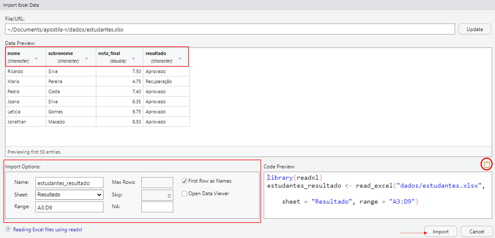

4 Importação
4.1 Introdução
Neste capítulo, iniciaremos a primeira etapa para começarmos a aplicar ciência de dados: a importação dos dados para o R.
Devemos ter em mente que um conjunto de dados pode estar em diversos formatos, seja em planilhas, arquivos texto ou extensões de outros programas. Assim, para cada formato, haverá uma função específica de importação.
Como citado na Seção 2.2.3, utilizar projetos no RStudio facilita a nossa vida para organizar, acessar e importar arquivos para o R. No decorrer deste capítulo, detalharemos sobre este processo a partir de um projeto. Portanto, caso ainda não tenha criado um, confira a seção.
Ao longo deste capítulo, utilizaremos um mesmo conjunto de dados em diversos formatos para que você possa acompanhar os exemplos a seguir. Para fazer o download dos arquivos clique aqui.
4.2 Caminhos
Antes de importarmos um arquivo para o R, devemos saber onde ele se localiza no computador. Assim, devemos saber qual caminho indicar para que as funções de importação possam acessar os arquivos.
Temos dois tipos de caminhos: o caminho absoluto e o caminho relativo.
O caminho absoluto é aquele que tem início na pasta raiz do computador. Para verificá-lo, utilizamos a função getwd().
getwd()
#> [1] C:/Users/gustavojun/Documents/apostila-icdrComo exemplo, este material foi confeccionado no caminho C:/Users/gustavojun/Documents/apostila-icdr, ou seja, o diretório do projeto chamado apostila-icdr está localizado na pasta Documents, referente ao usuário gustavojun.
Caso você tenha rodado a função getwd(), deve ter percebido que nossos caminhos absolutos são diferentes.
Por outro lado, o caminho relativo tem como origem o diretório de trabalho do projeto em uso. Dessa forma, não precisamos passar o caminho absoluto para importarmos um arquivo.
Como exemplo, ilustraremos a diferença entre os dois tipos de caminhos com o arquivo estudantes.xlsx presente na pasta dados do diretório do projeto.
Caminho absoluto:
C:/Users/gustavojun/Documents/apostila-icdr/dados/estudantes.xlsx;Caminho relativo:
dados/estudantes.xlsx.
Dessa forma, além de facilitar e tornar o código mais legível, o caminho relativo permite um código reprodutível à qualquer pessoa e em qualquer computador, uma vez que o meu caminho absoluto é, muito provavelmente, diferente do seu e de outros usuário.
Portanto, utilizar projetos no RStudio nos possibilita usar os caminhos relativos - independentemente do caminho absoluto, facilitando a importação de dados e tornando o código reprodutível. Nos exemplos a seguir, utilizaremos apenas os caminhos relativos para importar arquivos.
4.3 Planilhas Excel
Em muitos casos, um conjunto de dados está disponível em planilhas Excel, sejam de terceiros ou construídos pelo próprio cientista de dados. Para tanto, o pacote readxl possui funções para trabalhar com este tipo de arquivo.
O readxl faz parte do tidyverse, portanto, uma vez instalado o pacote tidyverse, precisamos apenas carregá-lo.
4.3.1 Importação de planilha Excel
A principal função do readxl é a read_excel(), que lê e importa arquivos Excel, seja no formato .xls ou .xlsx, identificando, automaticamente, qual a extensão do arquivo.
estudantes <- read_excel(path = "dados/estudantes.xlsx")Dentro da função read_excel(), informamos no argumento path = o caminho relativo até o arquivo. No exemplo, o arquivo Excel estudantes.xlsx está localizado na pasta dados do diretório do projeto em uso.
estudantes
#> # A tibble: 6 × 5
#> NOME Sobrenome SEXO IDADE curso_graduação
#> <chr> <chr> <chr> <chr> <chr>
#> 1 Ricardo Silva Masculino 23 Biologia
#> 2 Maria Pereira Feminino ? Agronomia
#> 3 Pedro Costa Masculino 21 Agronomia
#> 4 Joana Silva Feminino 19 Biologia
#> 5 Leticia Gomes Feminino 24 Agronomia
#> 6 Jonathan Macedo Masculino 25 BiologiaA função read_excel() importa os dados no formato de tibble, que nada mais é do que uma versão aperfeiçoada dos data frames. No Capítulo 5 veremos mais detalhes sobre as tibbles. Neste momento, considere a tibble uma análoga do data frame tradicional.
Além disso, nos é informado as dimensões do banco de dados (6 linhas e 5 colunas), o nome das variáveis e as suas respectivas classes.
Ao analisar a planilha importada, notamos algumas inconsistências nos dados. Para isso, a função read_excel() apresenta alguns argumentos que nos auxiliam na sua organização prévia à importação. A seguir, listaremos algumas das possíveis funcionalidades.
1. Nome das variáveis: o argumento col_names = permite alterar os nomes das variáveis ou, no caso de conjuntos de dados que não possuem variáveis nomeadas, criá-los. Para isso, passamos um vetor com os novos nomes.
read_excel(
path = "dados/estudantes.xlsx",
col_names = c("nome", "sobrenome", "sexo", "idade", "curso")
)
#> # A tibble: 7 × 5
#> nome sobrenome sexo idade curso
#> <chr> <chr> <chr> <chr> <chr>
#> 1 NOME Sobrenome SEXO IDADE curso_graduação
#> 2 Ricardo Silva Masculino 23 Biologia
#> 3 Maria Pereira Feminino ? Agronomia
#> 4 Pedro Costa Masculino 21 Agronomia
#> 5 Joana Silva Feminino 19 Biologia
#> 6 Leticia Gomes Feminino 24 Agronomia
#> 7 Jonathan Macedo Masculino 25 BiologiaPerceba que os nomes foram alterados, porém os antigos permaneceram como observações da primeira linha. Para isso, utilizamos o argumento skip =, que pula linhas do começo da planilha.
read_excel(
path = "dados/estudantes.xlsx",
col_names = c("nome", "sobrenome", "sexo", "idade", "curso"),
skip = 1
)
#> # A tibble: 6 × 5
#> nome sobrenome sexo idade curso
#> <chr> <chr> <chr> <chr> <chr>
#> 1 Ricardo Silva Masculino 23 Biologia
#> 2 Maria Pereira Feminino ? Agronomia
#> 3 Pedro Costa Masculino 21 Agronomia
#> 4 Joana Silva Feminino 19 Biologia
#> 5 Leticia Gomes Feminino 24 Agronomia
#> 6 Jonathan Macedo Masculino 25 Biologia2. Valores ausentes (NA): na variável idade, temos uma observação cuja informação não está disponível, ou seja, um valor NA (Seção 3.9). Contudo, essa informação está representada pelo caractere ?. A presença deste caractere faz com que a variável idade (de classe numérica) seja classificada como um vetor do tipo caractere (<chr>) devido ao comportamento de coersão (vide Seção 3.6).
Para substitui-lo, utilizamos o argumento na =, declarando qual caractere desejamos substituir por NA.
read_excel(
path = "dados/estudantes.xlsx",
col_names = c("nome", "sobrenome", "sexo", "idade", "curso"),
skip = 1,
na = "?"
)
#> # A tibble: 6 × 5
#> nome sobrenome sexo idade curso
#> <chr> <chr> <chr> <dbl> <chr>
#> 1 Ricardo Silva Masculino 23 Biologia
#> 2 Maria Pereira Feminino NA Agronomia
#> 3 Pedro Costa Masculino 21 Agronomia
#> 4 Joana Silva Feminino 19 Biologia
#> 5 Leticia Gomes Feminino 24 Agronomia
#> 6 Jonathan Macedo Masculino 25 BiologiaAo substituir o caractere ? por NA, a classe da variável "idade" passa a ser numérica (<dbl>) automaticamente.
3. Classe das variáveis: também poderíamos resolver a questão anterior trocando a classe da variável. Para isso, utilizamos o argumento col_types =, declarando um vetor com as classes desejadas para todas as variáveis.
Este argumento nos permite atribuir quatro tipos de classes:
"text": converte para a classe do tipo caractere;"numeric": converte em valores numéricos;"date": converte em datas;"skip": pula colunas, excluindo-as da importação.
estudantes_modificado <- read_excel(
path = "dados/estudantes.xlsx",
col_names = c("nome", "sobrenome", "sexo", "idade", "curso"),
skip = 1,
col_types = c("text", "text", "text", "numeric", "text")
)
estudantes_modificado
#> # A tibble: 6 × 5
#> nome sobrenome sexo idade curso
#> <chr> <chr> <chr> <dbl> <chr>
#> 1 Ricardo Silva Masculino 23 Biologia
#> 2 Maria Pereira Feminino NA Agronomia
#> 3 Pedro Costa Masculino 21 Agronomia
#> 4 Joana Silva Feminino 19 Biologia
#> 5 Leticia Gomes Feminino 24 Agronomia
#> 6 Jonathan Macedo Masculino 25 BiologiaAo converter a classe da variável idade para numérica, atribuiu-se o NA para todos os valores não numéricos (no caso, o caractere ?).
Por fim, salvamos as alterações finais no objeto chamado estudantes_modificado.
O exemplo anterior ilustrou um processo bem comum na rotina de análise de dados. Muitas planilhas as quais nos deparamos apresentam algumas (ou muitas) inconsistências para a importação ao R e, consequentemente, para sua análise.
O R apresenta ferramentas capazes de lidar com diversos tipos de problemas em importação dos dados. Para isso, temos que identificar os problemas e fazer os ajustes necessários até chegar na formatação de dados ideal para analisá-los. No Capítulo 5 abordaremos com mais detalhes a lógica da organização de dados, além de ferramentas complementares às apresentadas até agora.
4.3.2 Importação de diversas planilhas
Em alguns casos, um arquivo Excel pode conter diversas planilhas. Para verificar quais planilhas estão presentes, utilizamos a função excel_sheets(), também do pacote readxl.
excel_sheets(path = "dados/estudantes.xlsx")
#> [1] "Geral" "Notas" "Resultado"O mesmo arquivo utilizado anteriormente (estudantes.xlsx) apresenta três planilhas: "Geral", "Notas" e "Resultado".
Por padrão, a função importa a primeira planilha presente no arquivo. Dessa forma, nos exemplos anteriores, trabalhamos com a planilha "Geral".
Para selecionar as demais planilhas, devemos utilizar o argumento sheet = dentro da função read_excel() e informar seu nome entre aspas.
read_excel(path = "dados/estudantes.xlsx", sheet = "Geral")
#> # A tibble: 6 × 5
#> NOME Sobrenome SEXO IDADE curso_graduação
#> <chr> <chr> <chr> <chr> <chr>
#> 1 Ricardo Silva Masculino 23 Biologia
#> 2 Maria Pereira Feminino ? Agronomia
#> 3 Pedro Costa Masculino 21 Agronomia
#> 4 Joana Silva Feminino 19 Biologia
#> 5 Leticia Gomes Feminino 24 Agronomia
#> 6 Jonathan Macedo Masculino 25 Biologiaread_excel(path = "dados/estudantes.xlsx", sheet = "Notas")
#> # A tibble: 6 × 4
#> nome sobrenome prova1 prova2
#> <chr> <chr> <dbl> <dbl>
#> 1 Ricardo Silva 8 7
#> 2 Maria Pereira 2 7.5
#> 3 Pedro Costa 7.8 7
#> 4 Joana Silva 6 6.7
#> 5 Leticia Gomes 9.5 10
#> 6 Jonathan Macedo 9 8read_excel(path = "dados/estudantes.xlsx", sheet = "Resultado")
#> # A tibble: 12 × 4
#> `Resultado final da disciplina estatística geral` ...2 ...3 ...4
#> <chr> <chr> <chr> <chr>
#> 1 <NA> <NA> <NA> <NA>
#> 2 nome sobrenome nota_… resu…
#> 3 Ricardo Silva 7.5 Apro…
#> 4 Maria Pereira 4.75 Recu…
#> 5 Pedro Costa 7.4 Apro…
#> 6 Joana Silva 6.35 Apro…
#> 7 Leticia Gomes 9.75 Apro…
#> 8 Jonathan Macedo 8.5 Apro…
#> 9 <NA> <NA> <NA> <NA>
#> 10 Observação: <NA> <NA> <NA>
#> 11 O resultado final é a média aritmética das duas provas <NA> <NA> <NA>
#> 12 Alunos com média inferior a 5 ficam de recuperação <NA> <NA> <NA>Você deve ter notado que a planilha "Resultado" foi importada de maneira estranha. Isso se deve a um caso de formatação de incorreta dos dados. Vamos analisar como esta planilha se apresenta no Excel.

A planilha "Resultado" apresenta comentários que não fazem parte do conjunto de dados, o que interferiu no momento em que a importamos para o R.
Para contornar este problema, podemos utilizar os argumentos skip = para pular linhas do começo da planilha e o n_max =, para selecionar o número máximo de linhas.
read_excel(
path = "dados/estudantes.xlsx", sheet = "Resultado",
skip = 2,
n_max = 7
)
#> # A tibble: 6 × 4
#> nome sobrenome nota_final resultado
#> <chr> <chr> <dbl> <chr>
#> 1 Ricardo Silva 7.5 Aprovado
#> 2 Maria Pereira 4.75 Recuperação
#> 3 Pedro Costa 7.4 Aprovado
#> 4 Joana Silva 6.35 Aprovado
#> 5 Leticia Gomes 9.75 Aprovado
#> 6 Jonathan Macedo 8.5 AprovadoPrimeiramente, com o argumento skip = 2, pulamos as duas primeiras linhas da planilha. Em seguida, agora sem contar as duas linhas puladas, selecionamos as primeiras sete linhas com o n_max = 7.
Também podemos utilizar o argumento range = para selecionar um intervalo de células do Excel.
estudantes_resultado <- read_excel(
path = "dados/estudantes.xlsx", sheet = "Resultado",
range = "A3:D9"
)
estudantes_resultado
#> # A tibble: 6 × 4
#> nome sobrenome nota_final resultado
#> <chr> <chr> <dbl> <chr>
#> 1 Ricardo Silva 7.5 Aprovado
#> 2 Maria Pereira 4.75 Recuperação
#> 3 Pedro Costa 7.4 Aprovado
#> 4 Joana Silva 6.35 Aprovado
#> 5 Leticia Gomes 9.75 Aprovado
#> 6 Jonathan Macedo 8.5 AprovadoPor fim, guardamos as alterações finais da planilha "Resultado" no objeto chamado estudantes_resultado.
Ao analisar as três planilhas, nota-se que poderíamos juntá-las em uma única, pois apresentam informações que se relacionam entre si. No ?sec-join, veremos como juntá-las em um único data frame.
4.3.3 Salvar planilhas Excel
Após importar e ajustar os dados no R, podemos salvar as alterações em um novo arquivo Excel no formato .xlsx. Para isso, utilizamos o pacote openxlsx.
Este pacote não faz parte do tidyverse, portanto, antes de carregar, precisamos instalá-lo.
install.packages("openxlsx")Para salvar os dados em um arquivo Excel, utilizamos a função write.xlsx().
write.xlsx(x = estudantes_resultado, file = "dados/estudantes_resultado.xlsx")No argumento x = declaramos o nome do objeto que desejamos salvar e no file =, o caminho onde se deseja criar o arquivo e seu nome.
No exemplo, salvamos o objeto estudantes_resultado no arquivo chamado estudantes_resultado.xlsx, criado na pasta dados do diretório do projeto.
Para salvar mais de um objeto em diferentes planilhas de um mesmo arquivo Excel, criamos uma lista (list()) com os nomes das planilhas, indicando com o operador = qual objeto desejamos salvar.
No exemplo a seguir, criaremos um novo arquivo com as planilhas corrigidas anteriormente. Apenas a planilha "Notas" não precisou de alterações, bastando importar e salvá-la em um objeto para podermos criarmos o novo arquivo.
estudantes_notas <- read_excel(path = "dados/estudantes.xlsx", sheet = "Notas")planilhas <- list(
"Geral" = estudantes_modificado,
"Notas" = estudantes_notas,
"Resultado" = estudantes_resultado
)write.xlsx(x = planilhas, file = "dados/estudantes_corrigido.xlsx")Dessa forma, salvamos os objetos estudantes_modificado, estudantes_notas e estudantes_resultado em um novo arquivo chamado estudantes_corrigido.xlsx, mantendo os nomes originais das planilhas, "Geral", "Notas" e "Resultado".
Vale destacar que nunca devemos sobrescrever (substituir) o arquivo ou as planilhas originais pelos novos, pois podemos perder informações importantes, além de impossibilitar a reprodutibilidade do código, caso seja preciso realizar outras modificações a partir do arquivo original. Dessa forma, sempre crie um novo arquivo e com outro nome.
Para ver o resultado final das planilhas com as correções, podemos verificar no próprio arquivo Excel estudantes_corrigido.xlsx ou importá-las para o R.
read_excel(path = "dados/estudantes_corrigido.xlsx", sheet = "Geral")
#> # A tibble: 6 × 5
#> nome sobrenome sexo idade curso
#> <chr> <chr> <chr> <dbl> <chr>
#> 1 Ricardo Silva Masculino 23 Biologia
#> 2 Maria Pereira Feminino NA Agronomia
#> 3 Pedro Costa Masculino 21 Agronomia
#> 4 Joana Silva Feminino 19 Biologia
#> 5 Leticia Gomes Feminino 24 Agronomia
#> 6 Jonathan Macedo Masculino 25 Biologia
read_excel(path = "dados/estudantes_corrigido.xlsx", sheet = "Notas")
#> # A tibble: 6 × 4
#> nome sobrenome prova1 prova2
#> <chr> <chr> <dbl> <dbl>
#> 1 Ricardo Silva 8 7
#> 2 Maria Pereira 2 7.5
#> 3 Pedro Costa 7.8 7
#> 4 Joana Silva 6 6.7
#> 5 Leticia Gomes 9.5 10
#> 6 Jonathan Macedo 9 8
read_excel(path = "dados/estudantes_corrigido.xlsx", sheet = "Resultado")
#> # A tibble: 6 × 4
#> nome sobrenome nota_final resultado
#> <chr> <chr> <dbl> <chr>
#> 1 Ricardo Silva 7.5 Aprovado
#> 2 Maria Pereira 4.75 Recuperação
#> 3 Pedro Costa 7.4 Aprovado
#> 4 Joana Silva 6.35 Aprovado
#> 5 Leticia Gomes 9.75 Aprovado
#> 6 Jonathan Macedo 8.5 AprovadoNesta seção, trabalhamos com planilhas Excel alocadas em nosso computador. Contudo, vale destacar que também é possível importar planilhas online diretamente do R. O pacote googlesheets4, que faz parte do tidyverse, permite acessar as planilhas do Google Sheets. Você pode conhecer mais sobre este pacote acessando sua documentação em https://googlesheets4.tidyverse.org/.
4.4 Arquivos texto
Os arquivos texto são aqueles em que as variáveis das observações são separadas por algum delimitador. Comumente, possuem extensão nos formatos .csv ou .txt.
O delimitador pode ser qualquer operador, como vírgulas, ponto-e-vírgulas, espaços, tabulação (Tab) ou um operador genérico.
De acordo com o delimitador, utilizaremos uma função ou argumentos específicos para importar este tipo de arquivo. Para isso, o pacote readr, que também faz parte do tidyverse, traz as principais ferramentas necessárias.
4.4.1 Importação de arquivos texto
As funções de importação de arquivos texto a partir do readr possuem a sintaxe read_(). A Tabela 4.1 traz as principais funções de acordo com o delimitador, operador do delimitador e formato do arquivo.
readr.
| Função | Delimitador | Operador | Arquivo |
|---|---|---|---|
read_csv() |
Vírgula | "," |
.csv |
read_csv2() |
Ponto-e-vírgula | ";" |
.csv |
read_tsv() |
Tabulação | "\t" |
.txt e .csv
|
read_delim() |
Delimitador genérico | delim = |
.txt e .csv
|
read_table() |
Espaço | " " |
.txt e .csv
|
No caso da função read_delim(), devemos utilizar o argumento delim = para indicar qual caractere é o delimitador.
Como exemplo, importaremos um arquivo .csv (estudantes.csv), utilizando a função read_csv(), cujo delimitador é a vírgula.
read_csv(file = "dados/estudantes.csv")
#> # A tibble: 6 × 5
#> NOME Sobrenome SEXO IDADE curso_graduação
#> <chr> <chr> <chr> <chr> <chr>
#> 1 Ricardo Silva Masculino 23 Biologia
#> 2 Maria Pereira Feminino ? Agronomia
#> 3 Pedro Costa Masculino 21 Agronomia
#> 4 Joana Silva Feminino 19 Biologia
#> 5 Leticia Gomes Feminino 24 Agronomia
#> 6 Jonathan Macedo Masculino 25 BiologiaDentro da função read_csv(), declaramos o argumento file = com o caminho relativo até o arquivo (análogo ao path = da função readxl::read_excel()). Novamente, os dados são importados como tibbles (Capítulo 5).
Além disso, nos é informado as dimensões do conjunto de dados (6 linhas e 5 colunas), o nome das variáveis e as suas respectivas classes.
Caso seu arquivo .csv seja delimitado por ponto-e-vírgula, basta proceder da mesma maneira, porém utilizando a função read_csv2().
No caso de arquivos .txt, utilizamos a função read_delim(), sendo necessário indicar qual caractere é utilizado como delimitador.
No exemplo a seguir, importaremos um arquivo .txt, separado por tabulação. Para isso, com o argumento delim =, informamos qual o delimitador a ser considerado (no caso, o "\t" para a tabulação).
read_delim(file = "dados/estudantes.txt", delim = "\t")
#> # A tibble: 6 × 5
#> NOME Sobrenome SEXO IDADE curso_graduação
#> <chr> <chr> <chr> <chr> <chr>
#> 1 Ricardo Silva Masculino 23 Biologia
#> 2 Maria Pereira Feminino ? Agronomia
#> 3 Pedro Costa Masculino 21 Agronomia
#> 4 Joana Silva Feminino 19 Biologia
#> 5 Leticia Gomes Feminino 24 Agronomia
#> 6 Jonathan Macedo Masculino 25 BiologiaTambém podemos importar o arquivo anterior a partir da função read_tsv(), uma vez que o delimitador é a tabulação. Assim, não precisamos utilizar o argumento delim =.
read_tsv(file = "dados/estudantes.txt")
#> # A tibble: 6 × 5
#> NOME Sobrenome SEXO IDADE curso_graduação
#> <chr> <chr> <chr> <chr> <chr>
#> 1 Ricardo Silva Masculino 23 Biologia
#> 2 Maria Pereira Feminino ? Agronomia
#> 3 Pedro Costa Masculino 21 Agronomia
#> 4 Joana Silva Feminino 19 Biologia
#> 5 Leticia Gomes Feminino 24 Agronomia
#> 6 Jonathan Macedo Masculino 25 BiologiaDe maneira geral, as funções de importação de arquivos texto funcionam da mesma forma, alterando apenas o nome da função, o delimitador e o tipo de arquivo a ser considerado.
As funções do pacote readr também apresentam argumentos específicos para organizar os dados antes de serem importados, muitos deles idênticos aos do pacote readxl (Seção 4.3.1). A seguir, ilustraremos tais argumentos com a função read_csv().
read_csv(
file = "dados/estudantes.csv",
col_names = c("nome", "sobrenome", "sexo", "idade", "curso"),
skip = 1,
na = "?"
)
#> # A tibble: 6 × 5
#> nome sobrenome sexo idade curso
#> <chr> <chr> <chr> <dbl> <chr>
#> 1 Ricardo Silva Masculino 23 Biologia
#> 2 Maria Pereira Feminino NA Agronomia
#> 3 Pedro Costa Masculino 21 Agronomia
#> 4 Joana Silva Feminino 19 Biologia
#> 5 Leticia Gomes Feminino 24 Agronomia
#> 6 Jonathan Macedo Masculino 25 BiologiaContudo, há uma diferença significativa no argumento que altera a classe das colunas. O pacote readr adota uma estrutura mais flexível para o col_types =, permitindo especificar apenas as colunas cuja classe desejamos modificar. Na Seção 4.3.1, ao utilizar a função readxl::read_excel(), era necessário declarar um vetor ordenado com as classes de todas as variáveis, inclusive daquelas que não precisavam de alteração. Isso pode ser inconveniente em conjuntos de dados com muitas variáveis, mas poucas que requerem modificação.
Para isso, em col_types = cols() indicamos o nome da variável a ser alterada, seguida do operador = e a classe a ser atribuída (nome_variável = col_()).
read_csv(
file = "dados/estudantes.csv",
col_names = c("nome", "sobrenome", "sexo", "idade", "curso"),
skip = 1,
col_types = cols(idade = col_double())
)
#> # A tibble: 6 × 5
#> nome sobrenome sexo idade curso
#> <chr> <chr> <chr> <dbl> <chr>
#> 1 Ricardo Silva Masculino 23 Biologia
#> 2 Maria Pereira Feminino NA Agronomia
#> 3 Pedro Costa Masculino 21 Agronomia
#> 4 Joana Silva Feminino 19 Biologia
#> 5 Leticia Gomes Feminino 24 Agronomia
#> 6 Jonathan Macedo Masculino 25 BiologiaComo classes disponíveis, temos uma maior variedade neste pacote:
col_integer()ecol_double()converte em valores numéricos inteiros e reais, respectivamente;col_character()converte para a classe do tipo caractere;col_logical()converte em valores lógicos;col_factor()converte para a classe do tipo fator;col_date()col_time()ecol_datetime()converte em datas, tempo e datas-tempo, respectivamente;col_skip()pula colunas, excluindo-as da importação.
4.4.2 Salvar arquivos texto
Para salvar dados do R em arquivos texto, utilizamos um conjunto de funções write_() do pacote readr. A Tabela 4.2 traz estas funções, junto às especificações.
write_() do pacote readr.
| Função | Argumentos | Delimitador | Arquivo |
|---|---|---|---|
write_csv() |
x = , file =
|
Vírgula | .csv |
write_csv2() |
x = , file =
|
Ponto-e-vírgula | .csv |
write_delim() |
x = , file = , delim =
|
Diversos |
.txt e .csv
|
Estas funções são compostas pelos argumentos x = e file =, referentes ao objeto a ser salvo e ao caminho onde se deseja criar o arquivo, respectivamente. Com a função write_delim(), devemos especificar no argumento delim = qual o delimitador a ser considerado.
Nos exemplos a seguir, salvaremos dados nos formatos .csv e .txt. Utilizaremos um conjunto de dados nativo do R, o mtcars.
head(mtcars)
#> mpg cyl disp hp drat wt qsec vs am gear carb
#> Mazda RX4 21.0 6 160 110 3.90 2.620 16.46 0 1 4 4
#> Mazda RX4 Wag 21.0 6 160 110 3.90 2.875 17.02 0 1 4 4
#> Datsun 710 22.8 4 108 93 3.85 2.320 18.61 1 1 4 1
#> Hornet 4 Drive 21.4 6 258 110 3.08 3.215 19.44 1 0 3 1
#> Hornet Sportabout 18.7 8 360 175 3.15 3.440 17.02 0 0 3 2
#> Valiant 18.1 6 225 105 2.76 3.460 20.22 1 0 3 1# Arquivo .csv separado por vírgula
write_csv(x = mtcars, file = "dados/mtcars.csv")# Arquivo .csv separado por ponto-e-vírgula
write_csv2(x = mtcars, file = "dados/mtcars.csv")# Arquivo .txt, separado por tabulação
write_delim(x = mtcars, file = "dados/mtcars.txt", delim = "\t")4.5 Atalho Import Dataset
O RStudio traz um atalho muito útil para importarmos dados ao R. Trata-se do Import Dataset, presente na janela Environment.

O Import Dataset nos permite importar arquivos de diversas extensões, como ilustra a Figura 4.2. A seguir, listaremos as opções.
From Text (base)eFrom Text (readr)realizam a importação de arquivos texto. A primeira utiliza as funções base do R, enquanto a outra, as do pacotereadr;From Excelimporta planilhas Excel nos formatos.xlsou.xlsx, utilizando o pacotereadxl;From SPSS,From SASeFrom Statarealizam a importação de arquivos dos programas SPSS, SAS e Stata, utilizando o pacotehavenque também faz parte dotidyverse. Neste material, não entraremos em detalhes sobre estes tipos de arquivos, porém, destaca-se que a sintaxe de funções é praticamente a mesma do demonstrado neste material. Mais informações sobre o pacotehavenestão disponíveis em https://haven.tidyverse.org/.
Ao selecionar uma das opções, será aberta uma nova janela onde podemos colocar diversas especificações. Exemplificaremos com a importação de arquivo Excel.
Primeiramente, clicando em Browse…, devemos selecionar o arquivo a ser importado.
Selecionado o arquivo, são apresentadas prévias dos dados e do código de importação.
Também podemos realizar algumas alterações nos dados antes de importá-los. A janela Import Options traz os possíveis argumentos da função de importação. Além disso, clicando no nome das variáveis, podemos alterar as suas respectivas classes. Ao realizar as alterações, perceba que a prévia do código também é atualizada.

Para importar os dados, clicamos em Import. Também podemos copiar o código clicando no ícone do canto superior direito em Code Preview e colocá-lo no script.
Utilizar o atalho Import Dataset facilita a tarefa de importação de dados, pois é uma ferramenta visual que nos traz as prévias das ações realizadas antes de importarmos os dados.
Os conceitos vistos ao longo do capítulo são importantes para conhecermos as opções de argumentos, ter noção sobre as diferenças entre os tipos de arquivos, além de compreender toda a lógica envolvida. Dessa maneira, o Import Dataset se apresenta como um facilitador do aprendizado de importação de dados para o R.
4.6 Arquivos .rds
O R possui uma extensão própria de arquivo para armazenar qualquer tipo de objeto do R. Trata-se dos arquivos .rds ou .RDS.
Para salvar um objeto no formato .rds, utilizamos a função write_rds() do pacote readr. Como exemplo, salvaremos o arquivo estudantes.csv neste formato.
Para importar o novo arquivo criado, utilizamos a função read_rds(), também do pacote readr.
read_rds(file = "dados/estudantes.rds")
#> # A tibble: 6 × 5
#> NOME Sobrenome SEXO IDADE curso_graduação
#> <chr> <chr> <chr> <chr> <chr>
#> 1 Ricardo Silva Masculino 23 Biologia
#> 2 Maria Pereira Feminino ? Agronomia
#> 3 Pedro Costa Masculino 21 Agronomia
#> 4 Joana Silva Feminino 19 Biologia
#> 5 Leticia Gomes Feminino 24 Agronomia
#> 6 Jonathan Macedo Masculino 25 BiologiaA vantagem de utilizar a extensão .rds é a possibilidade de compactar o arquivo e deixá-lo mais “leve” (ocupa menor espaço de armazenamento), o que torna a importação dos dados mais rápida, principalmente quando utilizamos arquivos grandes. Realizamos a compactação com o argumento compress = na função write_rds().
Além disso, por se tratar de um arquivo próprio do R, é totalmente compatível com qualquer ação realizada dentro do software, preservando a estrutura dos dados quando importamos.
Em alguns casos, quando salvamos um objeto em um arquivo texto ou Excel, podem ocorrer algumas alterações quando os importamos de volta, como alterar a classe especificada para as colunas. Salvar em um arquivo .rds evita este tipo de problema.
Contudo, só podemos utilizar este tipo de arquivo no R. Caso queira utilizar dados construídos no R em outro programa, devemos utilizar outra extensão de arquivo, como os arquivos .parquet do pacote arrow.
4.7 Bancos de dados
A seguir, listaremos alguns sites que fornecem uma grande variedade de base de dados públicas. Confira alguma que apresente dados de seu interesse para que possa aplicar, futuramente, os conceitos aprendidos neste material.
FAOSTAT: https://www.fao.org/faostat/en/#data;
DataBank: https://databank.worldbank.org/databases;
Kaggle: https://www.kaggle.com/datasets;
Dados do Agro: https://dados.agr.br/fonte-de-dados/.
4.8 Resumo
Como visto, a importação de dados para o R não é uma tarefa difícil. Devemos nos atentar ao formato do arquivo, a fim de utilizar a função de importação correta. Em alguns casos, nos depararemos com arquivos cuja configuração de dados é incompatível com a importação ao R. Para isso, as funções de importação apresentam argumentos que reparam a maioria dos problemas. Por fim, também vimos funções que salvam os dados do R para diversos formatos de arquivos.
No próximo capítulo, trataremos sobre a etapa de organizar. Apresentaremos as tibbles, um tipo especial de data frame, além de explorarmos as funcionalidades presentes no pacote tidyr, a fim de obtermos uma base de dados organizada e fácil de se trabalhar.